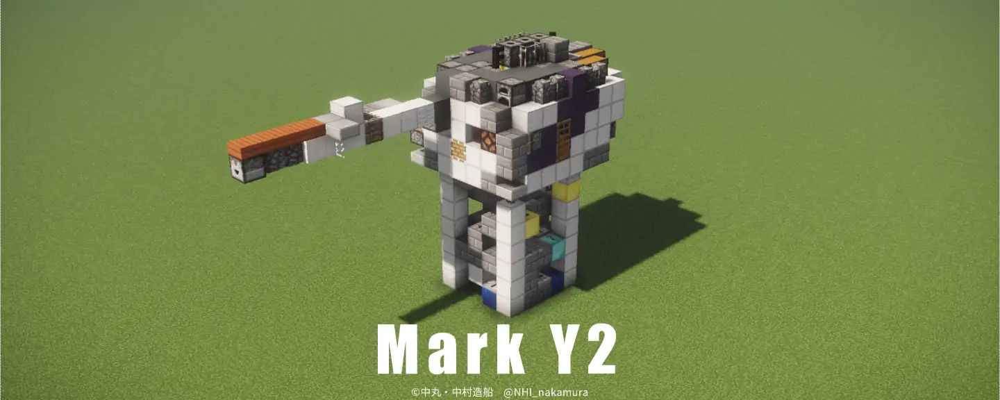

Mark Y2 単装砲
弾頭・装薬の2線式制御と水流装甲に対応しつつ、幅7の小型単装砲
仕様
性能
| 幅 | 7m |
| 最大弾頭数 | 208 x 1 |
主な搭載艦
| 夢洲級フリゲート |
解説
開発経緯
本砲は夢洲級フリゲートへ搭載するため開発されました。弾頭・装薬の2線式制御と水流装甲に対応しつつ、幅7を実現しました。また、デザイン性のため、防御力を犠牲に砲身を直結しました。
夢洲世代装置、それに搭載される第二世代電源装置に合わせ、装薬装填終了時起爆型2線式制御を初めて導入しました。
構造
本砲は水流装甲用回路スペースの確保のため、砲身を右に寄せた設計となっています。砲塔下部は船体からの信号を受けとる、共通3ピン入力端子がありますが、夢洲世代より前の装置とは互換性がありません。
攻撃
弾頭数片側480である。夢洲世代装置では射撃クロック数に関わらず装薬量が一定となることから、装薬ディスペンサーを2個に減らし、装薬燃費向上とパラメータ設定を細分化。
装薬装填終了時起爆型2線式制御、TDCC相当の制御に対応。
防御
全周水流装甲です。これまでの砲塔は防御力向上のため砲身を砲塔前面下部に接続していましたが、本砲はデザイン性のため砲口直上に接続しています。
また、防御力向上のため、射撃に連動してピストンを作動させ、水流装甲を整形する技術を初めて導入しました。
閉じる